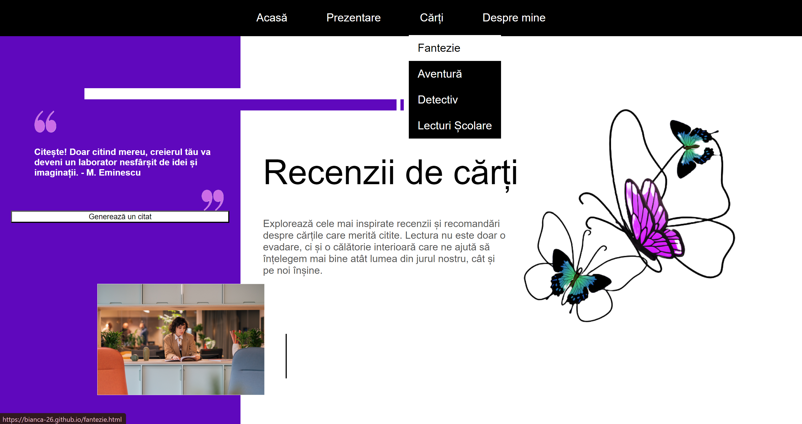
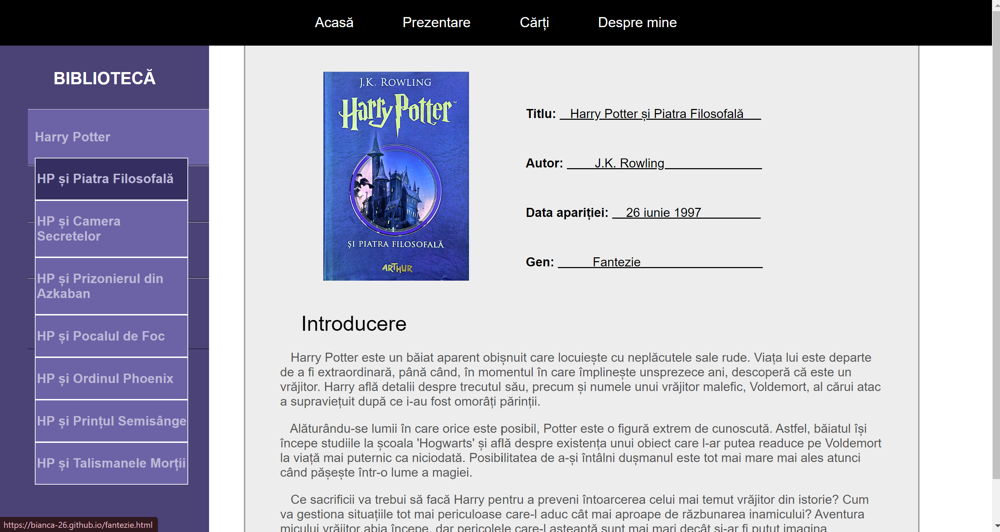

Fie că ești un utilizator nou sau un veteran al recenziilor de cărți, această prezentare este destinată să te ajute să înțelegi și să navighezi mai bine în cadrul acestui website. Să începem să explorăm împreună și să descoperim cum poți găsi cu ușurință recenziile care te interesează.
Cum pot găsi cartea pe care o caut?
Secțiunea "Cărți" pe care o poți identifica mai sus este special creată pentru a te ajuta să-ți găsești cartea dorită, în funcție de genul literar. Aici vei descoperi următoarele categorii principale: fantezie, aventură și detectiv. În plus, tot în același loc, vei observa și "Lecturi școlare", unde am inclus câteva dintre lecturile obligatorii în liceu, esențiale pentru pregătirea examenului de Bacalaureat. Această grupare te va ajuta să înțelegi mai bine operele de referință ale literaturii române și să descoperi motivele pentru care sunt atât de apreciate.
Selectând una dintre categoriile din meniu, vei fi direcționat către o pagină dedicată genului ales, unde te așteaptă o selecție variată de cărți.
Acum poți vedea toate cărțile pe care le-am inclus în categoria selectată de tine. Lista din partea stângă îți oferă o navigare ușoară pentru a găsi exact ceea ce cauți. Pe lângă romane sau alte povestiri scurte, sunt adăugate și serii de cărți; dacă apeși, va apărea o altă listă cu celelalte volume, facilitând explorarea întregii serii.
Dacă toți acești pași ți se par complicați, există o metodă mai ușoară care să te ajute să-ți găsești cartea cu ușurință. La finalul acestei pagini există butonul "Listă de cărți". Prin accesarea acestuia, vei avea la dispoziție lista completă cu toate cărțile prezente în acest site, precum și unde le poți găsi.
Ce conține o recenzie de carte?
În fiecare recenzie, vei începe prin a explora detaliile generale ale cărții, urmate de o introducere menită să îți stârnească curiozitatea. În această primă parte, nu vor fi dezvăluite informații esențiale ale cărții , întrucât scopul principal este să te încurajeze s-o citești. Știm cu toții cum ne grăbim să citim rezumate și comentarii chiar înainte de a trece prin lectură cu adevărat. De asemenea, tot aici în mica prezentare, găsești și o impresie vagă prin care-ți poți da seama dacă opera se potrivește gusturilor tale.
În cea de-a doua parte, vei găsi un rezumat clar și corect. De aici începi să intri în povestea propriu - zisă și să descoperi detalii semnificative. Eventual, vor exista analiza cărții, părerile și impresii generale, alături de concluzii relevante.